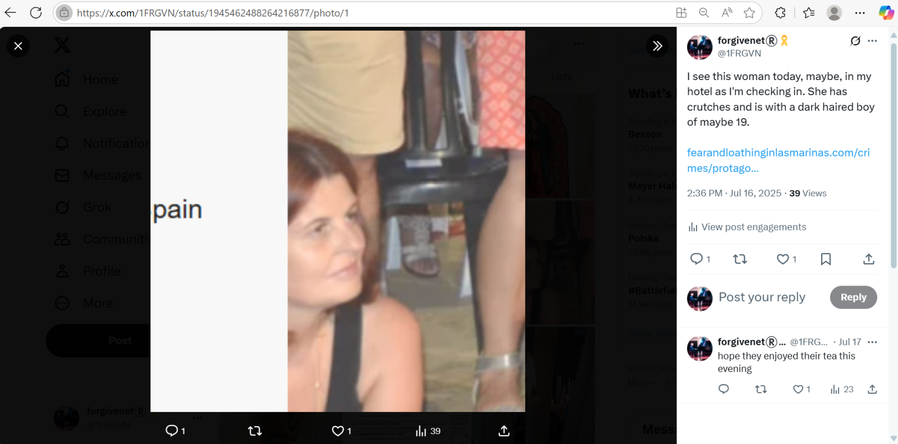
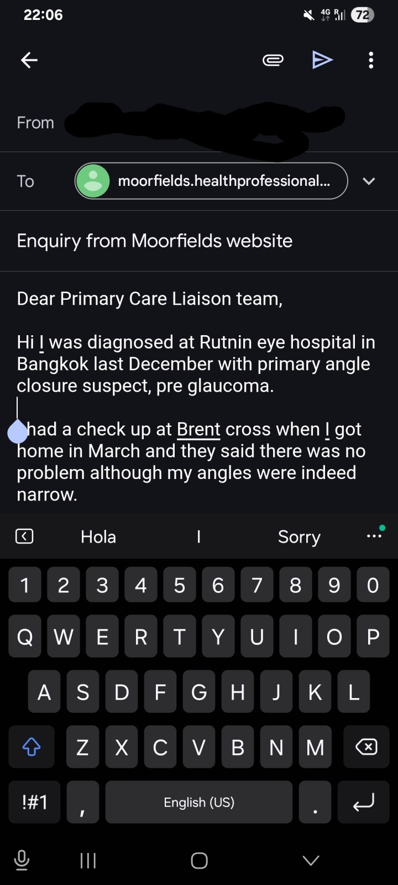
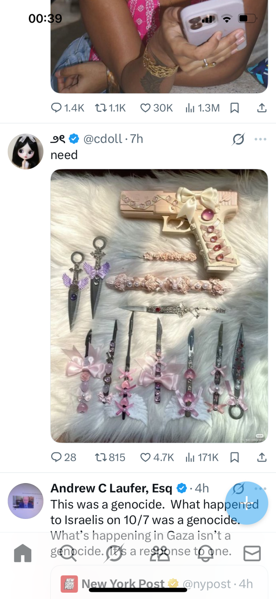
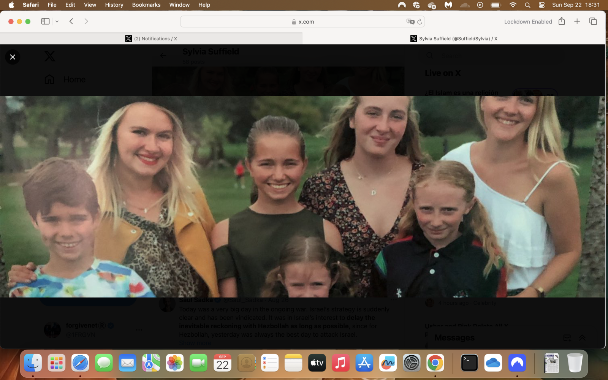

date.txt file as it is in Chinese.
| Criminal gang type | Budget | Core process | End goal | Methods | Finest hour |
|---|---|---|---|---|---|
| Porn gang | €/£ Thousands - as little as possible, slave labour mostly | Violence and violation | Criminal porn production by any means necessary, always worsening in step with porn-addict appetites | Sedation, drugging, poisoning, psychological torture, hacking, murder, serious sex offending | Industrial-scale baby-rape |
| Security services aka The Mayor of Shark City | $/£ Multi-millions, thousands of salaried individuals | Violence and violation | Whatever they want, often nothing to do with security, mostly coming from insane logic based on core process | Sedation, drugging, poisoning, psychological torture, hacking, murder, clandestine surgeries | Industrial-scale baby-theft |

